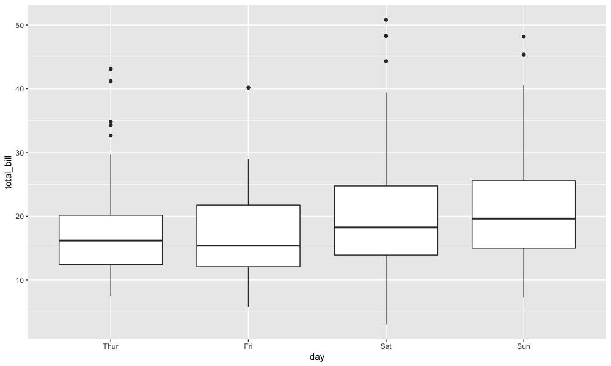
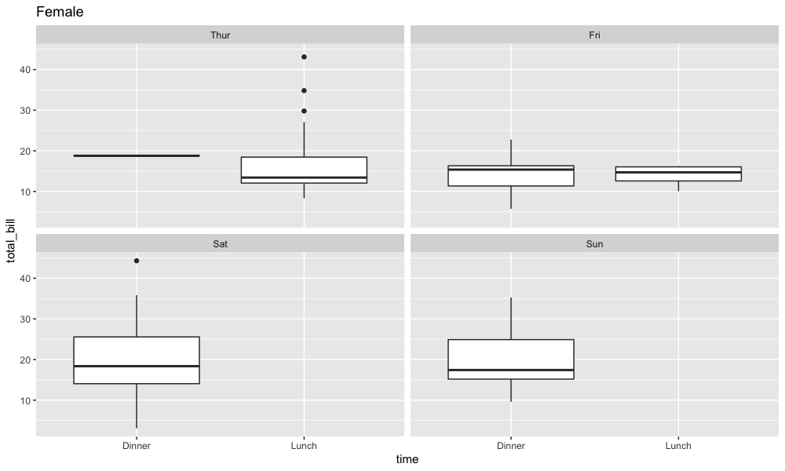
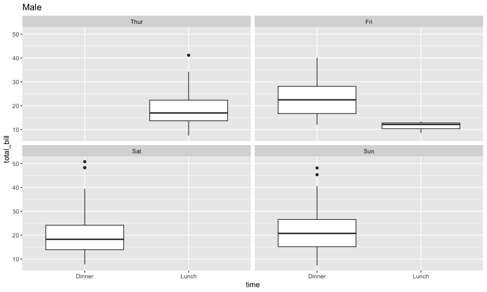
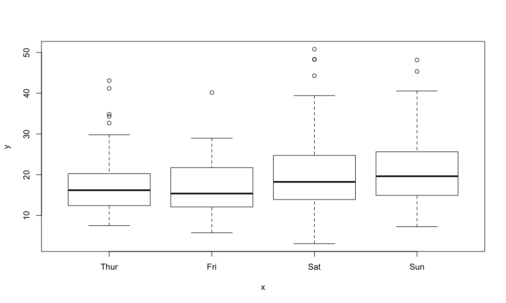

a listing
|
| income |
|
sex | day | statistic | tip | Total Bill |
Female | Thur | Ntot | 32 | 32 |
| | N | 32 | 32 |
| | Nmiss | 0 | 0 |
| | Mean | 2.58 | 16.72 |
| | Median | 2.00 | 13.79 |
| | SD | 1.11 | 7.76 |
| | Min | 1.25 | 8.35 |
| | Max | 5.17 | 43.11 |
| | 90% CLM | 2.24 - 2.91 | 14.39 - 19.04 |
|
| Fri | Ntot | 9 | 9 |
| | N | 9 | 9 |
| | Nmiss | 0 | 0 |
| | Mean | 2.78 | 14.15 |
| | Median | 3.00 | 15.38 |
| | SD | 0.94 | 4.79 |
| | Min | 1.00 | 5.75 |
| | Max | 4.30 | 22.75 |
| | 90% CLM | 2.20 - 3.36 | 11.18 - 17.11 |
|
| Sat | Ntot | 28 | 28 |
| | N | 28 | 28 |
| | Nmiss | 0 | 0 |
| | Mean | 2.80 | 19.68 |
| | Median | 2.62 | 18.36 |
| | SD | 1.23 | 8.81 |
| | Min | 1.00 | 3.07 |
| | Max | 6.50 | 44.30 |
| | 90% CLM | 2.40 - 3.20 | 16.85 - 22.52 |
|
| Sun | Ntot | 18 | 18 |
| | N | 18 | 18 |
| | Nmiss | 0 | 0 |
| | Mean | 3.37 | 19.87 |
| | Median | 3.50 | 17.41 |
| | SD | 1.14 | 7.84 |
| | Min | 1.01 | 9.60 |
| | Max | 5.20 | 35.26 |
| | 90% CLM | 2.90 - 3.83 | 16.66 - 23.09 |
|
Male | Thur | Ntot | 30 | 30 |
| | N | 30 | 30 |
| | Nmiss | 0 | 0 |
| | Mean | 2.98 | 18.71 |
| | Median | 2.53 | 16.98 |
| | SD | 1.35 | 8.02 |
| | Min | 1.44 | 7.51 |
| | Max | 6.70 | 41.19 |
| | 90% CLM | 2.56 - 3.40 | 16.23 - 21.20 |
|
| Fri | Ntot | 10 | 10 |
| | N | 10 | 10 |
| | Nmiss | 0 | 0 |
| | Mean | 2.69 | 19.86 |
| | Median | 2.60 | 17.21 |
| | SD | 1.14 | 10.02 |
| | Min | 1.50 | 8.58 |
| | Max | 4.73 | 40.17 |
| | 90% CLM | 2.03 - 3.35 | 14.05 - 25.66 |
|
| Sat | Ntot | 59 | 59 |
| | N | 59 | 59 |
| | Nmiss | 0 | 0 |
| | Mean | 3.08 | 20.80 |
| | Median | 3.00 | 18.24 |
| | SD | 1.79 | 9.84 |
| | Min | 1.00 | 7.74 |
| | Max | 10.00 | 50.81 |
| | 90% CLM | 2.69 - 3.47 | 18.66 - 22.94 |
|
| Sun | Ntot | 58 | 58 |
| | N | 58 | 58 |
| | Nmiss | 0 | 0 |
| | Mean | 3.22 | 21.89 |
| | Median | 3.08 | 20.73 |
| | SD | 1.27 | 9.13 |
| | Min | 1.32 | 7.25 |
| | Max | 6.50 | 48.17 |
| | 90% CLM | 2.94 - 3.50 | 19.88 - 23.89 |
|
a footnote
total bill statistics
|
| |
Thur | Fri | Sat | Sun |
|
| sex | statistic |
Dinner | Lunch | Dinner | Lunch | Dinner | Dinner |
| Female |
| N |
1 | 31 | 5 | 4 | 28 | 18 |
| | Mean |
18.78 | 16.65 | 14.31 | 13.94 | 19.68 | 19.87 |
| | Median |
18.78 | 13.42 | 15.38 | 14.70 | 18.36 | 17.41 |
| | SD |
NA | 7.88 | 6.29 | 2.87 | 8.81 | 7.84 |
| | Min |
18.78 | 8.35 | 5.75 | 10.09 | 3.07 | 9.60 |
| | Max |
18.78 | 43.11 | 22.75 | 16.27 | 44.30 | 35.26 |
| Male |
| N |
| 30 | 7 | 3 | 59 | 58 |
| | Mean |
| 18.71 | 23.49 | 11.39 | 20.80 | 21.89 |
| | Median |
| 16.98 | 22.49 | 12.16 | 18.24 | 20.73 |
| | SD |
| 8.02 | 9.86 | 2.51 | 9.84 | 9.13 |
| | Min |
| 7.51 | 12.03 | 8.58 | 7.74 | 7.25 |
| | Max |
| 41.19 | 40.17 | 13.42 | 50.81 | 48.17 |
| Total |
| N |
1 | 61 | 12 | 7 | 87 | 76 |
| | Mean |
18.78 | 17.66 | 19.66 | 12.85 | 20.44 | 21.41 |
| | Median |
18.78 | 16.00 | 18.66 | 13.42 | 18.24 | 19.63 |
| | SD |
NA | 7.95 | 9.47 | 2.84 | 9.48 | 8.83 |
| | Min |
18.78 | 7.51 | 5.75 | 8.58 | 3.07 | 7.25 |
| | Max |
18.78 | 43.11 | 40.17 | 16.27 | 50.81 | 48.17 |
plot A example for basic plotting

plot B example for plotting lists


plot C example for base plot
